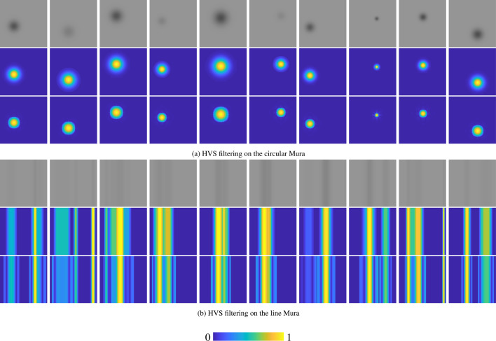

This paper proposes a perceptual Mura index inspired by characteristics of the human visual system for quantitative Mura evaluation. The work aims to better reflect perceptual quality by connecting objective evaluation with how visual irregularities are actually perceived.

The core motivation of this paper is that objective evaluation of visual defects should be more consistent with human perception. Mura, which refers to non-uniform visual defects, can be difficult to assess accurately if the evaluation does not take into account how humans actually see and interpret irregular visual patterns.
This work introduces a perceptual index grounded in the human visual system, aiming to provide a more meaningful quantitative measure for Mura evaluation. By incorporating perceptual characteristics, the method seeks to improve the correspondence between numerical assessment and visual experience.